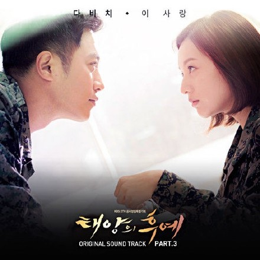
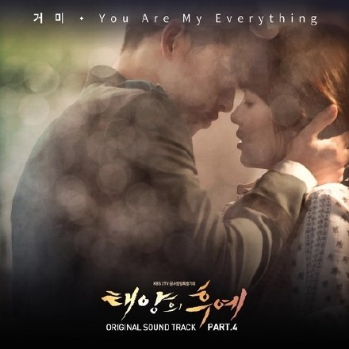

宋仲基，1985年9月19日出生于韩国大田，韩国演员、主持人。2008年出演电影《霜花店》进入演艺圈，之后在电视剧、电影、综艺主持多方发展。
2009年在音乐节目Music Bank中担任主持。2010年主演首部电影《心心历险记2》，累计票房68万观影人次；出演电视剧《成均馆绯闻》具龙河一角，被观众熟知，后在艺能节目《Running man》中担任固定嘉宾（E01—E41）。 宋仲基百度百科 宋仲基于2013年8月27日入伍，于2015年5月26日退伍[4] 。退伍后选择KBS2电视剧《太阳的后裔》作为回归作品。2016年出演电影《军舰岛》，预计2017年上映。[5]
第一集剧情：正在韩国休假的大尉柳时镇与上士徐大荣路遇小偷逃跑，出手打伤小偷。小偷趁徐大荣为其紧急治疗时偷走了徐大荣的手机。大荣与柳时镇后知后觉发现手机被偷，来到了小偷被送往治疗的海星医院。海星医院的急诊室医生姜暮烟为小偷治疗，但小偷屡屡不合作。
小偷将徐大荣的手机交给姜暮烟后，趁机离开。前来寻找手机的柳时镇与徐大荣，被姜暮烟误认为是黑帮老大。徐大荣与柳时镇无奈离开，并在医院外解救了正被黑帮围攻的小偷。 此处链接至百度剧情简介 太阳的后裔太阳的后裔太阳的后裔太阳的后裔太阳的后裔。
好看的图片
好看的图片
| 名称 | 单价 | 价格 |
|---|---|---|
| 苹果 | 3元/千克 | 19元 |
| 荔枝 | 3元/千克 | 19元 |
| 桃子 | 3元/千克 | 19元 |
| 香蕉 | 3元/千克 | 19元 |
| 总计 | 76元 | |